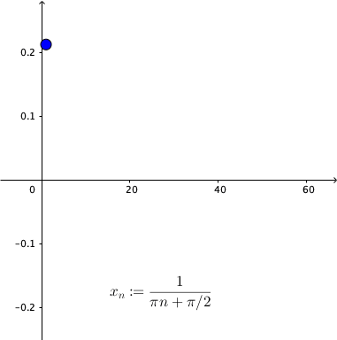

Mathematical Analysis
Summary Week 5
❤️ Support this project ❤️
PatreonContinuous functions
Definition:
Let $S \subset \R$, $c \in S$, and let $f \colon S \to \R$ be a function.
We say
that $f$ is continuous at $c$
if for every $\epsilon \gt 0$
there is a $\delta \gt 0$ such that whenever $x \in S$ and $\abs{x-c} \lt
\delta$, then
$\abs{\,f(x)-f(c)} \lt \epsilon$.
When $f \colon S \to \R$ is continuous at all $c \in S$, then we simply say
$f$ is a continuous function.
Continuous functions
Example
Continuous functions
Theorem: Consider a function $f \colon S \to \R$ defined on a set $S \subset \R$ and let $c \in S$. Then:
- If $c$ is not a cluster point of $S$, then $f$ is continuous at $c$.
- If $c$ is a cluster point of $S$, then $f$ is continuous at $c$ if and only if the limit of $f(x)$ as $x \to c$ exists and \begin{equation*} \lim_{x\to c} f(x) = f(c) . \end{equation*}
- The function $f$ is continuous at $c$ if and only if for every sequence $\{ x_n \}$ where $x_n \in S$ and $\lim\, x_n = c$, the sequence $\{ \,f(x_n) \}$ converges to $f(c)$.
Continuous functions
Discontinuity criterion
Theorem: Let $S\subset \R$, let $f \colon S \to \R$ and let $c\in S$.
if and only if
there exists a sequence $\{x_n\}$ in $S$ such that $\lim x_n = c$, but the sequence $\left\{\,f(x_n)\right\}$ does not converge to $f(c)$.
Continuous functions
Example: $\displaystyle f(x)=\sin\frac{1}{x}$, for $x\neq 0$ and $f(x)=0$ for $x=0$.
|  |

|
| $x_n\ra 0$ as $n\ra \infty$. | $\qquad\qquad f\left(x_n\right)$ does not converge to $0$. |
Continuous functions
Properties
Theorem: Let $f \colon S \to \R$ and $g \colon S \to \R$ be functions continuous at $c \in S$.
- The function $h \colon S \to \R$ defined by $h(x) := f(x)+g(x)$ is continuous at $c$.
- The function $h \colon S \to \R$ defined by $h(x) := f(x)-g(x)$ is continuous at $c$.
- The function $h \colon S \to \R$ defined by $h(x) := f(x)g(x)$ is continuous at $c$.
- If $g(x)\not=0$ for all $x \in S$, the function $h \colon S \to \R$ defined by $h(x) := \frac{f(x)}{g(x)}$ is continuous at $c$.
Continuous functions
Composition of functions
Theorem: Let $A, B \subset \R$ and $f \colon B \to \R$ and $g \colon A \to B$ be functions. If $g$ is continuous at $c \in A$ and $f$ is continuous at $g(c)$, then $f \circ g \colon A \to \R$ is continuous at $c$.
Continuous functions
Polynomials are continuous
Theorem: Let $f \colon \R \to \R$ be a polynomial. That is \begin{equation*} f(x) = a_d x^d + a_{d-1} x^{d-1} + \cdots + a_1 x + a_0 , \end{equation*} for some constants $a_0, a_1, \ldots, a_d$. Then $f$ is continuous.
Continuous functions
More continuous functions
- Rational functions where they are defined.
- $\sin x$, $\cos x$ are continuous.
- The functions $\tan x$, $\cot x$, $\sec x$, $\csc x$ where they are defined.
Continuous functions
Continuous functions on closed intervals
Theorem: A continuous function $f \colon [a,b] \to \R$ is bounded.
Theorem (Extreme value theorem): A continuous function $f \colon [a,b] \to \R$ on a closed and bounded interval $[a,b]$ achieves both an absolute minimum and an absolute maximum on $[a,b]$.
Continuous functions
|
Lemma: Let $f \colon [a,b] \to \R$ be a continuous function. Suppose $f(a) \lt 0$ and $f(b) \gt 0$. Then there exists a number $c \in (a,b)$ such that $f(c) = 0$. |

|
Continuous functions
Bolzano's theorem / Intermediate Value Theorem
|
Theorem (Intermediate Value Theorem): |

|
Continuous functions
Uniform continuity
Definition: Let $S \subset \R$, and let $f \colon S \to \R$ be a function. Suppose for every $\epsilon \gt 0$ there exists a $\delta > 0$ such that whenever $x, c \in S$ and $\abs{x-c} \lt \delta$, then $\abs{\,f(x)-f(c)} \lt \epsilon$. Then we say $f$ is uniformly continuous.
Continuous functions
Uniform vs Nonuniform continuity
Continuous functions
Uniform vs Nonuniform continuity
Continuous functions
Comparison between continuity and uniform continuity
Let $S \subset \R$ and let $f \colon S \to \R$ be a function.
|
Continuous function: |
Uniform continuous: |
|---|
Continuous functions
Uniform continuity
Theorem: Let $f \colon [a,b] \to \R$ be a continuous function. Then $f$ is uniformly continuous.
Continuous functions
Nonuniform continuity criteria
Theorem: Let $S\subseteq \R$ and let $f \colon S \to \R$. Then the following statements are equivalent:
- $f$ is not uniformly continuous on $S$.
- There exists an $\epsilon_0>0$ such that for every $\delta>0$ there are points $x_{\delta}$, $y_{\delta}$ in $S$ such that $|x_{\delta} - y_{\delta}|\lt \delta$ and $|\,f(x_{\delta}) - f(y_{\delta})|\geq\epsilon_0$.
- There exists an $\epsilon_0\gt 0$ and two sequences $\{x_n\}$ and $\{y_n\}$ in $S$ such that $\lim (x_n-y_n)=0$ and $|\,f(x_{n}) - f(y_{n})|\geq\epsilon_0$ for all $n\in \N$.
Continuous functions
Nonuniform continuity criteria
Example: We can apply the previous result to show that $f(x)=\dfrac{1}{x}$ is not uniformly continuous on $(0,\infty)$.
Consider $x_n=\dfrac{1}{n}$ and $y_n=\dfrac{1}{n+1}$ in $(0,\infty)$. Then we have \[ \lim_{n\ra \infty} (x_n-y_n)=\lim_{n\ra \infty} \left(\frac{1}{n}-\frac{1}{n+1}\right)=\lim_{n\ra \infty}\frac{1}{n(n+1)} =0, \] but $\abs{\,f(x_n)- f(y_n)}=1$ for all $n\in \N$.
Continuous functions
Lipschitz continuous
Definition: A function $f \colon S\subseteq \R \to \R$ is Lipschitz continuous, if there exists a $K > 0$, such that \begin{equation*} \abs{\,f(x)-f(y)} \leq K \abs{x-y} \qquad \text{for all } x \text{ and } y \text{ in } S. \end{equation*}
Theorem: A Lipschitz continuous function is uniformly continuous.
Remark: Not every uniformly continuous function is Lipschitz continuous. For example $f(x)=\sqrt{x}$ defined on $I=[0,2]$. $f$ is uniformly continuous on $I$ but there is no number $K>0$ such that $|\,f(x)-f(0)|\lt K|x-0|$ for all $x\in I.$
Continuous functions
Monotone functions
Definition:
Let $S \subset \R$.
We say $f \colon S \to \R$ is increasing
(resp. strictly increasing) if $x,y \in S$ with
$x \lt y$ implies $f(x) \leq f(y)$ (resp. $f(x) \lt f(y)$).
We define
decreasing and
strictly decreasing in the same way by switching the
inequalities for $f$.
If a function is either increasing or decreasing, we say it is
monotone. If it is
strictly increasing or strictly decreasing, we say it is
strictly monotone.
Continuous functions
Inverse functions
Theorem: If $I \subset \R$ is an interval and $f \colon I \to \R$ is strictly monotone, then the inverse $f^{-1} \colon f(I) \to I$ is continuous.